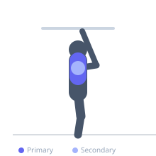
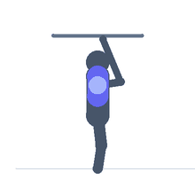

Exercise guide / Prone YTW
Prone YTW
The prone YTW is a scapular stability and lower trapezius rehabilitation exercise performed face-down on a bench or floor. Three arm positions — Y (overhead diagonal), T (horizontal), and W (elbows bent at sides) — collectively target the lower, middle, and upper trapezius as well as the rhomboids and posterior deltoid. It is prescribed for scapular dyskinesis, shoulder impingement, and postural correction programs.
Primary muscles
lower trapezius
middle trapezius
Secondary muscles
rhomboids
posterior deltoid
Stabilizers
erector spinae
Equipment
No Equipment (Bodyweight)


Starting position
- Lie face-down on a bench or mat with arms hanging relaxed at the sides or slightly off a bench edge.
Setup
- No equipment required. Light dumbbells (0.5–2 kg) may be added when bodyweight is mastered.
Steps
- Step 1 — Y position: Raise both arms overhead in a Y shape (diagonal, thumbs up). Squeeze the shoulder blades down and together. Hold 2 seconds, lower.
- Step 2 — T position: Raise both arms out to the sides in a T shape (horizontal, thumbs up). Retract and depress the scapulae. Hold 2 seconds, lower.
- Step 3 — W position: Bend the elbows and raise them to shoulder height, pulling the elbows back as if doing a row, hands near the ears forming a W. Hold 2 seconds, lower.
- Step 4: Perform 8–12 repetitions of each position in sequence as one set.
Coaching cues
- Pull your shoulder blades into your back pockets
- Thumbs point up in all three positions
- Think about making the letters with your arms while keeping your shoulders away from your ears
Breathing
- Exhale on each lift. Inhale when lowering.
Range of motion
- Lift arms only as high as the shoulder blade can maintain depression. Quality of scapular position matters more than height.
Tempo
- 2-second lift, 2-second hold, 2-second lower. 8–12 reps each position, 2–3 sets.
Common mistakes
- Shrugging the shoulders upward — focus on depressing the shoulder blades, not elevating
- Using momentum rather than deliberate scapular retraction and depression
- Lifting the head and craning the neck — keep the neck in neutral
Safety
- If shoulder pain occurs, reduce the range of motion
- This is a low-load exercise — the goal is neuromuscular control, not strength
Training
- strength: 8–12 reps
- strength: 2–3 sets
- Rest: {'strength': 60}